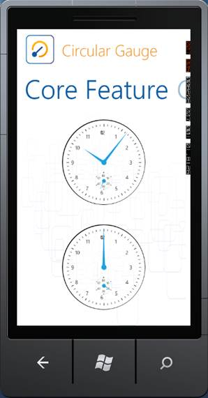
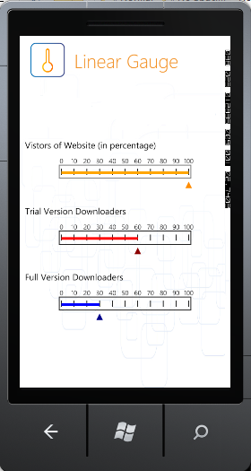

Essential Gauge for Windows Phone is a data visualization tool that can be used when you want to display several data points or data ranges so that the data presented is concise, precise and compact as well (in terms of area) . This way, data shown by the control can be quickly understood by the user. The Syncfusion Windows Phone library enables the users to configure the Windows Phone Gauge using XAML and also through C# codes. The Gauge control comes with sophisticated customization support.
Essential Gauge supports Mango edition of the Windows Phone operating system. Windows Phone 7.5 (codenamed Mango) provides support for more than five hundred features compared to the Windows Phone 7.0 version. Some of the major features include multitasking and Silverlight 4 support. Essential Studio controls for Windows Phone now support Mango edition, enabling you to utilize these advanced features.
Essential Gauge Windows Phone is intended for developers who want to use gauges in their Windows Phone applications. Essential Gauge is a very useful control to indicate a current value from a range of values.
We have four forms of Essential Gauge:
· Circular gauge can be used for representing a range of values in Circular form. It can be used to create sophisticated dashboards, clocks, industrial equipments, medical equipments and many more.
· Linear Gauge can be used for displaying a range of values graphically along a linear scale. It can be very well described as the linear form of Circular Gauge.
· Digital Gauge can be used to display any value in the segment display manner. The data given in the control is clearly depicted as it will be similar to alpha numeric representation.
· Rolling Gauge can be used to display values in segments. The data given in the control is displayed with rolling effects
Appearance and Structure of the Control
The following image shows an example of a circular gauge.

Figure 1: Circular Gauge
The following image shows an example of a linear gauge.

Figure 2: Linear Gauge
Use Case Scenarios
Circular gauges are mainly used to represent clocks, speedometers, and other round-faced meters with any number of hands and insets. These are mainly used in car dashboards.
Linear gauges are used to represent the following:
· Thermometer
· Equalizer
Digital gauges are used to represent the:
· Digital Clock
· Stop Watch
Rolling gauges are used for representing countdown schedulers.
Key Features
The Circular Gauge control comes with the following feature set:
· Circular Gauge with customizable radius.
· Stunning Gauge is created by customizing the appearance of the gauge by using variety of properties.
· Multiple Scale support with full-fledged customization.
· Multi Pointer support with build needle and pointer styles.
· State Indicator support.
· Range support with various positioning options.
· Custom Images and Custom Labels support.
The Linear Gauge control comes with the following feature set:
· Stunning Gauge is created by customizing the appearance of the gauge by using variety of properties.
· Multiple Scale support with full-fledged customization.
· Multi Pointer support with build needle and pointer styles.
· State Indicator support.
· Range support with various positioning options.
· Custom Images and Custom Labels support.
The Digital Gauge control comes with the following feature set:
· Supports Alpha Numeric Charecters.
· Completely customizable
The Rolling Gauge control comes with the following feature set:
· Supports Clockwise and Anti-clockwise Rolling.
· Completely customizable
User Guide Organization
The product comes with numerous samples as well as an extensive documentation to guide you. This User Guide provides detailed information about the features and functionalities of the Essential Gauge for Windows Phone. It is organized into the following sections:
· Overview-This section gives a brief introduction to the product and its key features.
· Installation and Deployment-This section elaborates on the install location of the samples, license etc.
· What's New-This section lists the new features implemented for every release.
· Getting Started-This section guides you on getting started with Windows Phone application, controls etc.
· Concepts and Features-The features of Gauge control are illustrated with use case scenarios, code examples and screen shots under this section.
Document Conventions
The conventions below will help you to quickly identify the important sections of information, while using the content:
|
Convention |
Icon |
Description |
|
Note |
|
Represents important information. |
|
Example |
Example: |
Represents an example. |
|
Tip |
|
Represents useful hints, that will help you in using the controls and features. |
|
Additional information |
|
Represents additional information on the corresponding topic. |
 Note:
Note: